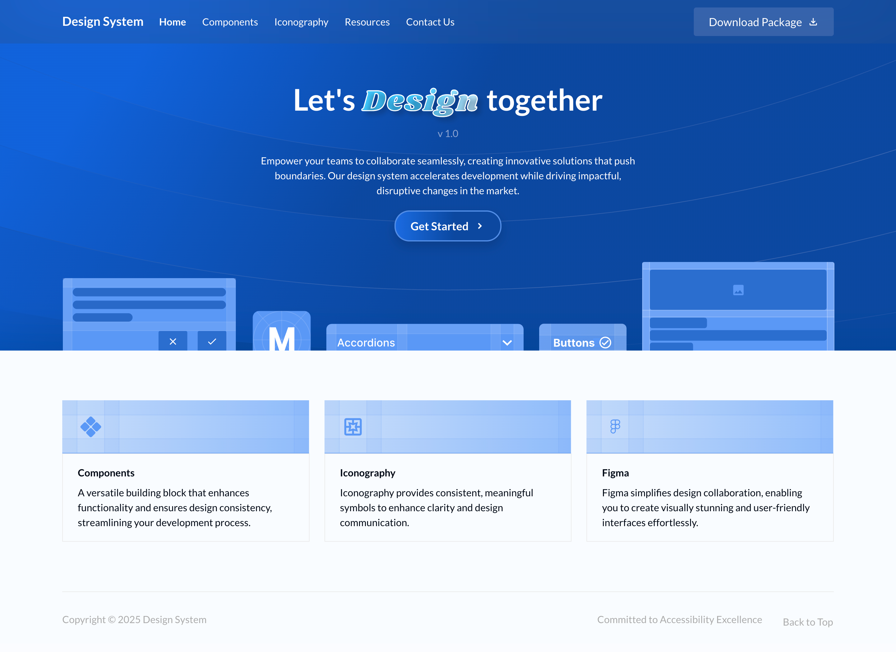
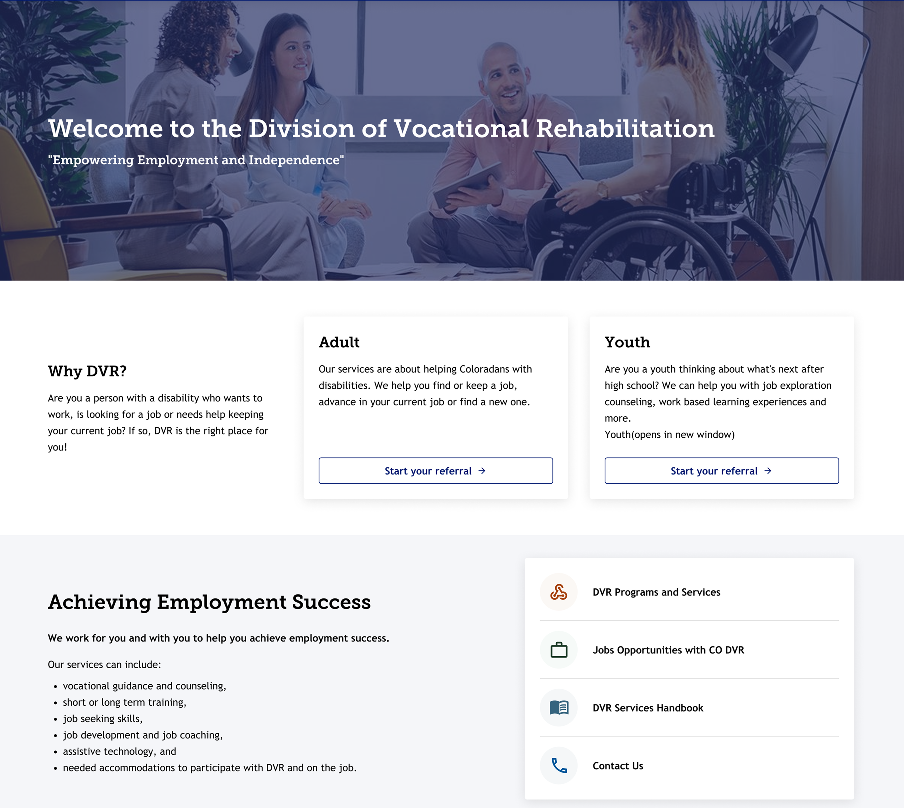

- Designed reusable UI components to ensure visual consistency and streamline development
across
multiple projects.
- Followed WCAG 2.0 accessibility guidelines to create user-friendly, inclusive UI elements
for a
broader user base.
- Developed component documentation outlining usage patterns (“When to use,” “When not to
use”),
accessibility considerations, and implementation notes.
- Created web page layouts using standardized components to enhance user experience and speed
up
product development.
- Defined visual identity elements such as color palettes, icons, and illustrations,
strengthening
the MTX brand.
- Built responsive, accessible web pages using HTML, CSS, Sass, and JavaScript ensuring
cross-device compatibility and performance.
- Implemented a scalable design system that was adopted organization-wide, significantly
reducing
design and development effort.

- Created user-centric wireframes and high-fidelity designs based on client feedback and
iterative discussions.
- Led design reviews with stakeholders to ensure alignment before moving to development.
- Developed responsive and accessible UI screens from scratch, ensuring a user-friendly
experience from project inception.
- Followed and implemented UX/UI and ADA accessibility best practices from the beginning of
the project.
- Collaborated with backend developers to ensure accurate implementation of UI designs,
bridging the gap between design and development.
- Delivered a team-wide presentation on ADA compliance, emphasizing the importance of
accessible design and development workflows.
- Conducted UI testing and design validation to ensure final deliverables matched both design
specifications and client expectations.
- Acted as a UX and ADA advocate, driving awareness and adoption of accessibility standards
across the team.